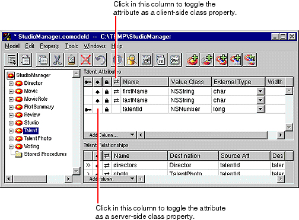

Creating a Java Client WebObjects Application
By default, EOModeler makes class properties for all of an entity's attributes (except for non-database attributes that you add to the entity). When an attribute is a class property, it means that the property will be included in your class definition and that it can be fetched from the database. To put it another way, only attributes that are marked as class properties become part of your enterprise objects.
You should only mark as class properties those attributes whose values are meaningful in the objects that are created when you fetch from the database. Attributes that are essentially database artifacts, such as primary and foreign keys, shouldn't be marked as class properties unless the key has meaning to the user and must be displayed in the user interface. For more discussion of primary and foreign keys, see the section Adding Relationships .
Eliminating primary and foreign keys as class properties has no adverse effect on how Enterprise Objects Framework manages enterprise objects in your application.
In the model-entity view of the Model Editor, select the entity you want to modify.Identify an attribute (typically a primary or foreign key) that you do not want to be a class property
Click the diamond icon next to the attribute to remove it as a server-side class property.
Click the double-arrow icon next to the attribute to remove it as a client-side class property.
Save the model by choosing Save from the Model menu.
You'll be returning to EOModeler to enhance your model in later exercises, but for now you're ready to build the first stage of the StudioManager application.
© 1999 Apple Computer, Inc.